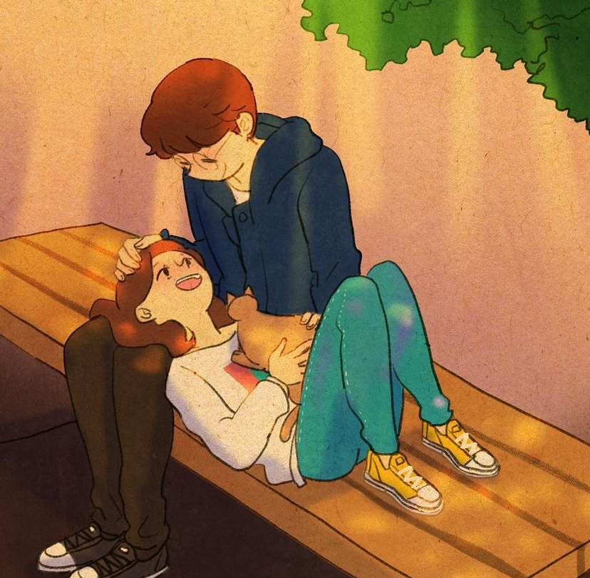

Aunque pueda imaginarme mil citas perfectas, mil escenarios y mil cumplidos, hay un solo ser que al día de hoy les da sentido.
Le pone un nombre y rostro a ese sueño de poder tenerla en mi regazo, mientras me doy cuenta de la fortuna que seria poder mirarla a los ojos y decirle que la quiero, no para una noche o para un ratito, sino para tomar su mano y aprender a conocernos. Saber que solo debo darle fruta a temperatura ambiente o que su color favorito es el rojo... saber qué la hace feliz, qué le duele o cómo ayudarla, cómo quererla, ser un equipo y... tener un perrito.
Y no sé cómo empezó, pero quizás fue desde que me di cuenta de que su sonrisa es lo más bonito que jamás he escuchado.